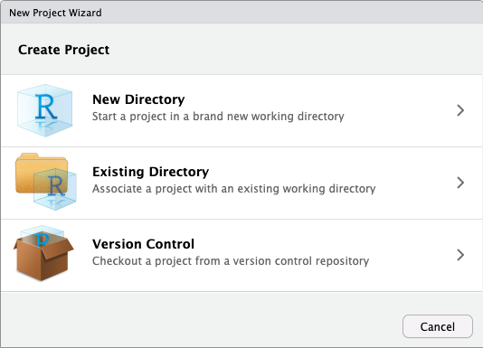
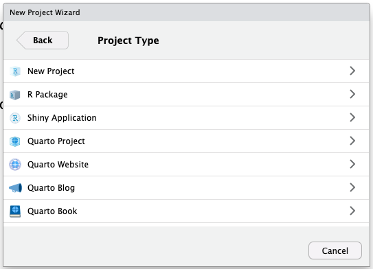
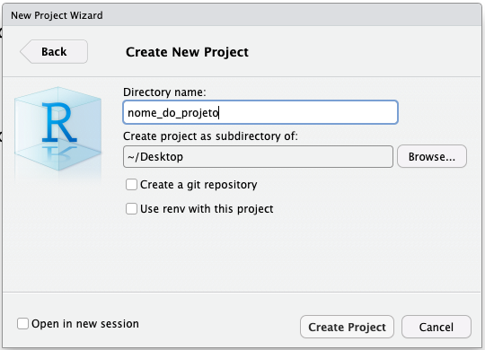

# Este é um comentário2 Introdução ao R para análise de dados
Aviso
Página em construção.
Descrição: Nesta oficina, será apresentado o ambiente de programação R e o IDE RStudio. A oficina é voltada para iniciantes e não é necessário conhecimento prévio de programação. Durante a oficina, serão abordadas tarefas básicas como iniciar um projeto, importar tabelas, realizar filtros, criar tabelas de resumo (com estatísticas descritivas), e exportar resultados. Esta oficina faz parte de uma trilha de treinamentos voltada para iniciantes, fornecendo uma base para quem deseja aprender a analisar dados com R.
2.1 Dia 1 - Parte 1 - Conhecendo o R e o RStudio
2.1.1 O que é o R?
R é uma linguagem de programação com o foco em estatística, análise e visualização de dados.
Ela é uma linguagem de código aberto, o que significa que qualquer pessoa pode utilizá-la gratuitamente. Além disso, as pessoas com mais experiência na linguagem podem contribuir com o desenvolvimento de novas funcionalidades e pacotes.
Caso queira saber mais sobre a linguagem R, acesse o site oficial (R-Project).
Ao instalar o R, você terá acesso a um programa chamado “R Console” que permite escrever e executar códigos em R:

Porém o R Console não é muito amigável para escrever códigos complexos ou realizar análises de dados. Por isso, é recomendado utilizar um ambiente de desenvolvimento integrado (IDE). A IDE mais utilizada por pessoas que programam em R é o RStudio.
2.1.2 O que é o RStudio?

O RStudio é um IDE focada em programação em R, e é desenvolvido pela Posit. Ele facilita a escrita de códigos, execução de scripts, e visualização dos resultados.
Existem algumas versões do RStudio. Nesta oficina, utilizaremos o RStudio Desktop, pois é a versão de código aberto (portanto é gratuita). Daqui em diante, sempre que mencionarmos “RStudio”, estaremos nos referindo ao RStudio Desktop.
2.1.3 Criando projetos
O RStudio possui uma funcionalidade chamada projetos. Quando criamos um projeto no RStudio, uma nova pasta é criada no computador, e o RStudio define essa pasta como o diretório de trabalho. Além disso, o RStudio também cria um arquivo com a extensão .Rproj dentro dessa pasta, que contém informações sobre o projeto.
É recomendado que sempre trabalhemos em projetos no RStudio, pois isso facilita a organização dos arquivos e a reprodução do código.
É recomendado também salvar os arquivos referentes ao projeto (como scripts, bases de dados, resultados, etc) dentro do projeto. Isso não significa que precisamos colocar todos os arquivos dentro da pasta principal do projeto: podemos criar sub-pastas para organizar os arquivos.
Para criar um projeto no RStudio, primeiro precisamos acessar o menu de criação de projetos (New project Wizard). Podemos fazer isso de três formas:
No menu superior, clicando em
File > New Project...Clicando no ícone de novo projeto na barra de ferramentas do RStudio:
No canto superior esquerdo, clicando no botão referente à projetos, e depois em
New Project...:

Depois, escolhemos o tipo de projeto que queremos criar. No geral, escolhemos a opção New Directory, para criar uma nova pasta no computador:

Depois, escolhemos o tipo de projeto que queremos criar. Cada tipo de projeto apresenta arquivos específicos de template. O RStudio apresenta algumas opções de projeto, porém é possível adicionar novos tipos de projeto instalandos pacotes específicos.
No geral, escolhemos a opção New Project, para criar um projeto simples:

Na tela seguinte, precisamos informar o nome do projeto (no campo Directory name) e o diretório onde ele será criado (no campo Create project as subdirectory of):

Após preencher as informações solicitadas, clicamos em Create Project. O RStudio criará o projeto e o abrirá:

Dica
Note que o nome do projeto que criamos aparece no canto superior direito do RStudio.
2.1.4 Conhecendo o RStudio
Ao abrir o RStudio, veremos a seguinte tela:
 Aos poucos, conheceremos os painéis e funcionalidades do RStudio. Neste momento, podemos destacar os três painéis que são apresentados:
Aos poucos, conheceremos os painéis e funcionalidades do RStudio. Neste momento, podemos destacar os três painéis que são apresentados:
Console: painel onde os códigos são executados. É similar ao “R Console”, citado anteriormente.
Environment: painel onde as variáveis e dados carregados ficam listados.
Files: painel onde podemos navegar por arquivos no computador. A página inicial é o diretório de trabalho: esse conceito será explicado mais adiante.
2.1.5 Scripts
No RStudio, podemos escrever e executar códigos no Console, porém os códigos são perdidos quando fechamos o programa. Para salvar os códigos e reutilizá-los posteriormente, utilizamos scripts.
Os scripts são arquivos de texto onde podemos escrever códigos R e salvá-los para utilizar posteriormente. É recomendado que qualquer código que você deseje reutilizar ou que seja importante para a análise que você fizer seja salvo em um script.
Existem algumas formas de criar um novo script:
No menu superior, clicando em
File > New File > R Script.Utilizando o atalho
Ctrl + Shift + N(Windows) ouCmd + Shift + N(Mac).Clicando no ícone de um arquivo com um sinal de
+no canto superior esquerdo do RStudio e selecionandoR Script:

Após abrir um script, o RStudio exibirá 4 paineis:

Dica
O script é um arquivo salvo no nosso computador. Lembre-se de salvar os scripts com frequência para evitar perder o nosso trabalho.
Podemos salvar um script de algumas formas, como:
Clicando em
File > Saveno menu superior.Clicando no ícone do disquete (
 ).
).Utilizando o atalho
Ctrl + S(Windows) ouCmd + S(Mac).
2.1.5.1 Como executar os códigos?
Podemos escrever e executar códigos no Console ou em um script.
No Console, escrevemos o código diretamente e pressionamos Enter para executá-lo.
Em um Script, escrevemos o código e podemos executá-lo de algumas formas:
Selecionando o trecho de código que queremos executar e clicando no botão
Rundo RStudio, ou utilizando o atalhoCtrl + Enter(Windows) ouCmd + Enter(Mac).Clicando no trecho que queremos executar e clicando no botão
Rundo RStudio, ou utilizando o atalhoCtrl + Enter(Windows) ouCmd + Enter(Mac).
2.1.5.2 Comentários
Comentários são textos que não são executados pelo R. Podemos usar comentários para explicar o que um bloco de código faz, para anotar ideias e explicar escolhas feitas, ou para desativar temporariamente um trecho de código.
No R, todo texto em uma linha após um hashtag (#) é um comentário. Por exemplo:
2.1.6 Funções
Agora que já sabemos onde escrever nossos códigos em R (no Console ou em um script), é importante entender o conceito de funções.
Uma função é tipo de objeto no R, que quando executado, executa um bloco de código específico. As funções são úteis para evitar repetição de códigos e organizar o nosso trabalho.
No R, existem muitas funções prontas que podemos utilizar. Por exemplo, a função Sys.Date() retorna a data atual do sistema:
# Consutar a data atual do sistema (computador)
Sys.Date()[1] "2025-07-16"Para utilizar uma função, escrevemos o nome dela seguido de parênteses. Dentro dos parênteses, podemos colocar dados e informações úteis para a função executar a tarefa desejada, e são chamados de argumentos.
Por exemplo, a função sqrt() calcula a raiz quadrada de um número. Para utilizá-la, podemos escrever sqrt() e informar esse número entre parênteses:
# Calcular a raiz quadrada de 25
sqrt(25)[1] 5Algumas funções podem receber mais de um argumento. Por exemplo, a função round() arredonda um número para um determinado número de casas decimais. Para utilizá-la, podemos escrever round() e informar o número e o número de casas decimais entre parênteses:
pi[1] 3.141593# Sem argumentos: arredondar o número pi para um número inteiro (0 casas decimais)
round(pi)[1] 3# Com argumentos: arredondar o número pi para 2 casas decimais
round(pi, digits = 2)[1] 3.14Podemos consultar a documentação de uma função para entender como ela funciona, quais argumentos ela aceita e como utilizá-la. Falaremos mais sobre isso na seção de documentação.
Dica
Ao adquirir experiência com o R, podemos criar nossas próprias funções. Isso é útil para automatizar tarefas repetitivas e para organizar o código.
2.1.7 Pacotes
Pacotes do R são coleções de funções, dados e documentação que estendem a funcionalidade básica da linguagem.
Para instalar um pacote, utilizamos a função install.packages() e informando o nome do pacote como texto entre aspas. Por exemplo, para instalar o pacote {tidyverse}, utilizamos o seguinte comando:
# Instalar o pacote tidyverse
install.packages("tidyverse") Apenas precisamos instalar um pacote uma vez.
Depois de instalado, podemos carregá-lo com a função library(), para que as funções do pacote fiquem disponíveis para uso:
# Carregar o pacote tidyverse
library(tidyverse) ── Attaching core tidyverse packages ──────────────────────── tidyverse 2.0.0 ──
✔ dplyr 1.1.4 ✔ readr 2.1.5
✔ forcats 1.0.0 ✔ stringr 1.5.1
✔ ggplot2 3.5.2 ✔ tibble 3.3.0
✔ lubridate 1.9.4 ✔ tidyr 1.3.1
✔ purrr 1.0.4
── Conflicts ────────────────────────────────────────── tidyverse_conflicts() ──
✖ dplyr::filter() masks stats::filter()
✖ dplyr::lag() masks stats::lag()
ℹ Use the conflicted package (<http://conflicted.r-lib.org/>) to force all conflicts to become errorsPrecisamos carregar o pacote sempre que abrirmos um novo script, ou quando reiniciamos o RStudio. Uma pratica frequente é carregar os principais pacotes necessários no início do script.
Cuidado
Uma outra forma de acessar uma função é utilizando o operador ::. Por exemplo, para acessar a função read_csv() do pacote {readr}, podemos escrever readr::read_csv().
Essa sintaxe é menos frequente, porém útil para evitar problemas de conflito de funções com o mesmo nome em pacotes diferentes. Esse problema acontece mais frequentemente quando carregamos muitos pacotes em um mesmo script.
Por exemplo: o pacote {dplyr} apresenta uma função filter(), e o pacote {stats} também apresenta uma função filter(). Se não usarmos o operador ::, a função utilizada será a do pacote que foi carregado por último. Usando o operador ::, podemos escolher qual função queremos utilizar.
2.1.8 Documentação
As funções e pacotes do R apresentam textos com explicações e exemplos de uso, chamados de documentação.
No RStudio, podemos acessar a documentação de uma função ou pacote das seguintes formas:
- Para buscar informações sobre funções de pacotes já carregados (com
library), podemos utilizar a funçãohelp(), informando o nome da função que queremos buscar como argumento (ex:help(mean)), ou utilizar o operador?, seguido do nome da função (ex:?mean).
# Abrir a documentação da função mean()
help(mean)
?mean - Para fazer uma por funções presentes em todos os pacotes instalados no computador, podemos utilizar o operador
??, seguido pelo termo que queremos buscar (ex:??mean). Essa é uma busca mais ampla, que procura pelo termo no nome e na descrição das funções.
# Buscar por funções que contenham o termo "mean"
??mean - Podemos utilizar o painel Help para buscar informações sobre funções e pacotes:

2.2 Dia 1 - Parte 2 - Conceitos básicos do R
2.2.1 Operações matemáticas
O R permite realizar operações matemáticas básicas, como soma, subtração, multiplicação, divisão, potenciação, entre outras.
1 + 1 # Soma[1] 21 - 1 # Subtração[1] 02 * 3 # Multiplicação[1] 610 / 2 # Divisão[1] 52 ^ 3 # Potenciação[1] 8A ordem matemática das operações também vale no R. Por exemplo, a expressão 2 + 3 * 4 será calculada como 2 + (3 * 4):
2 + 3 * 4[1] 142.2.2 Objetos
No R, um objeto é uma estrutura de dados que armazena valores: podemos armazenar um valor único, um conjunto de valores, uma base de dados, entre outros.
É muito útil armazenar valores em objetos, pois podemos reutilizá-los em diferentes partes do código, sem precisar digitar o valor novamente.
2.2.2.1 Objetos existentes no R
Existem alguns objetos já criados no R, como por exemplo o objeto letters, que armazena as letras do alfabeto:
pi[1] 3.141593letters [1] "a" "b" "c" "d" "e" "f" "g" "h" "i" "j" "k" "l" "m" "n" "o" "p" "q" "r" "s"
[20] "t" "u" "v" "w" "x" "y" "z"
Aviso
O R é case-sensitive, ou seja, ele diferencia letras maiúsculas de minúsculas. Portanto, nome é diferente de Nome.
Por exemplo, o objeto pi armazena o valor de π (com um número limitado de casas decimais). O nome do objeto é escrito em minúsculas:
pi[1] 3.141593Se tentarmos acessar o objeto com o nome em maiúsculas, o R irá retornar um erro, pois esse objeto não existe:
PiError: object 'Pi' not found2.2.2.2 Criando um objeto
Para criar um objeto, precisamos definir um nome, e atribuir um valor à este nome. Para isso, usamos o operador de atribuição: <-. Um atalho para esse operador é o Ctrl + - no Windows, ou Option + - no Mac .
No exemplo a seguir, criamos um objeto chamado nome_da_universidade e atribuímos a ele o texto "Universidade de São Paulo":
nome_da_universidade <- "Universidade de São Paulo"Podemos acessar o valor armazenado em um objeto digitando o nome do objeto:
nome_da_universidade[1] "Universidade de São Paulo"O objeto apenas será alterado se utilizarmos o operador de atribuição novamente. Por exemplo, a função tolower() transforma todas as letras de um texto em minúsculas:
tolower(nome_da_universidade)[1] "universidade de são paulo"Mas como não utilizamos a atribuição, o objeto nome_da_universidade não foi alterado:
nome_da_universidade[1] "Universidade de São Paulo"Para alterar o objeto, precisamos atribuir o resultado da função tolower() ao objeto nome_da_universidade:
nome_da_universidade <- tolower(nome_da_universidade)Agora, o objeto nome_da_universidade foi alterado:
nome_da_universidade[1] "universidade de são paulo"Portanto, cuidado: ao criar um objeto com nome igual à outro objeto existente, o objeto anterior será substituído pelo novo objeto.
2.2.3 Tipos de objetos
Existem diferentes tipos de objetos no R, e cada tipo de objeto possui diferentes propriedades. Os principais tipos de objetos que utilizaremos ao longo do curso são: vetores e data.frames.
2.2.3.1 Vetores
Vetores armazenam um conjunto de valores de uma dimensão. Eles podem ser criados com a função c(), que significa combine (combinar). Por exemplo, para criar um vetor com os números de 1 a 5:
vetor_de_numeros <- c(1, 2, 3, 4, 5)Os vetores podem armazenar diferentes tipos de dados, como números, textos, fatores, entre outros. Porém cada vetor pode armazenar apenas um tipo de dado. Por exemplo, se tentarmos criar um vetor que armazena números e textos, o R irá converter todos os valores para texto. Essa propriedade é chamada de coerção.
vetor_misto <- c(1, 2, "três", 4, 5)
class(vetor_misto)[1] "character"vetor_misto[1] "1" "2" "três" "4" "5" No geral, podemos converter dados sem perder informação seguindo essa ordem: Lógico > Inteiro > Numérico > Texto.
2.2.3.2 Data.frames
Os data.frames são conjuntos de valores com duas dimensões: linhas e colunas. Porém, diferente do que vimos para as matrizes, os data.frames podem armazenar diferentes tipos de dados em cada coluna.
Esse é o principal tipo de objeto que utilizaremos nesse curso, pois ele é muito útil para armazenar dados tabulares.
Existem alguns data.frames já criados no R, como o airquality, que armazena dados sobre a qualidade do ar na cidade de Nova York, em 1973. Essas são as primeiras linhas do data.frame airquality:
head(airquality) Ozone Solar.R Wind Temp Month Day
1 41 190 7.4 67 5 1
2 36 118 8.0 72 5 2
3 12 149 12.6 74 5 3
4 18 313 11.5 62 5 4
5 NA NA 14.3 56 5 5
6 28 NA 14.9 66 5 6Para criar um data.frame, podemos usar a função data.frame(). Entretanto, o mais comum é importar dados de arquivos, como CSV, Excel, ou de bancos de dados. Falaremos sobre como importar dados na próxima aula.
2.3 Dia 2 - Parte 1 - Importação de dados
2.3.1 Dados utilizados: Eleicões de 2024
Os dados que utilizaremos nesse curso são provenientes de uma base de dados do Tribunal Superior Eleitoral (TSE) do Brasil, que contém informações sobre as eleições de 2024. A base de dados original foi baixada do portal de dados abertos do TSE: Votação nominal por município e zona. Para facilitar o download dos dados durante a atividade, filtramos a tabela para dados do município de São Paulo.
Junto aos dados, o TSE disponibiliza também um arquivo chamado leiame.pdf, com informações importantes sobre os dados, significado dos nomes das colunas, entre outros. É importante ler estes arquivos, quando disponibilizados.
Vamos utilizar o pacote tidyverse para importar os dados, então é importante garantir que ele esteja carregado:
library(tidyverse)O arquivo que queremos importar é esse aqui: votacao_muni_sp.csv. Ele é um arquivo .csv (CSV = comma separated values, ou valores separados por vírgula), porém o separador utilizado é o ;.
Para importar esse arquivo, podemos utilizar a função read_csv2() (a função read_csv() é utilizada para importar tabelas com valores separados por vírgula):
dados <- read_csv2("https://raw.githubusercontent.com/beatrizmilz/2025-07-fbcp/refs/heads/main/intro-r/dados/votacao_muni_sp.csv")ℹ Using "','" as decimal and "'.'" as grouping mark. Use `read_delim()` for more control.Rows: 56487 Columns: 50
── Column specification ────────────────────────────────────────────────────────
Delimiter: ";"
chr (28): DT_GERACAO, NM_TIPO_ELEICAO, DS_ELEICAO, DT_ELEICAO, TP_ABRANGENC...
dbl (21): ANO_ELEICAO, CD_TIPO_ELEICAO, NR_TURNO, CD_ELEICAO, SG_UE, CD_MUN...
time (1): HH_GERACAO
ℹ Use `spec()` to retrieve the full column specification for this data.
ℹ Specify the column types or set `show_col_types = FALSE` to quiet this message.A função View() pode ser utilizada para visualizar os dados em uma tabela interativa:
View(dados)2.3.2 Conhecendo a base de dados
Para conhecer melhor a base de dados, podemos utilizar algumas funções para explorar as colunas e os tipos de dados.
A função nrow() nos mostra o número de linhas da base de dados, e a função ncol() nos mostra o número de colunas:
nrow(dados)[1] 56487ncol(dados)[1] 50A função colnames() nos mostra os nomes das colunas:
colnames(dados) [1] "DT_GERACAO" "HH_GERACAO"
[3] "ANO_ELEICAO" "CD_TIPO_ELEICAO"
[5] "NM_TIPO_ELEICAO" "NR_TURNO"
[7] "CD_ELEICAO" "DS_ELEICAO"
[9] "DT_ELEICAO" "TP_ABRANGENCIA"
[11] "SG_UF" "SG_UE"
[13] "NM_UE" "CD_MUNICIPIO"
[15] "NM_MUNICIPIO" "NR_ZONA"
[17] "CD_CARGO" "DS_CARGO"
[19] "SQ_CANDIDATO" "NR_CANDIDATO"
[21] "NM_CANDIDATO" "NM_URNA_CANDIDATO"
[23] "NM_SOCIAL_CANDIDATO" "CD_SITUACAO_CANDIDATURA"
[25] "DS_SITUACAO_CANDIDATURA" "CD_DETALHE_SITUACAO_CAND"
[27] "DS_DETALHE_SITUACAO_CAND" "CD_SITUACAO_JULGAMENTO"
[29] "DS_SITUACAO_JULGAMENTO" "CD_SITUACAO_CASSACAO"
[31] "DS_SITUACAO_CASSACAO" "CD_SITUACAO_DCONST_DIPLOMA"
[33] "DS_SITUACAO_DCONST_DIPLOMA" "TP_AGREMIACAO"
[35] "NR_PARTIDO" "SG_PARTIDO"
[37] "NM_PARTIDO" "NR_FEDERACAO"
[39] "NM_FEDERACAO" "SG_FEDERACAO"
[41] "DS_COMPOSICAO_FEDERACAO" "SQ_COLIGACAO"
[43] "NM_COLIGACAO" "DS_COMPOSICAO_COLIGACAO"
[45] "ST_VOTO_EM_TRANSITO" "QT_VOTOS_NOMINAIS"
[47] "NM_TIPO_DESTINACAO_VOTOS" "QT_VOTOS_NOMINAIS_VALIDOS"
[49] "CD_SIT_TOT_TURNO" "DS_SIT_TOT_TURNO" A função head() nos mostra as primeiras linhas da base de dados, e a função tail() nos mostra as últimas linhas:
head(dados)# A tibble: 6 × 50
DT_GERACAO HH_GERACAO ANO_ELEICAO CD_TIPO_ELEICAO NM_TIPO_ELEICAO NR_TURNO
<chr> <time> <dbl> <dbl> <chr> <dbl>
1 16/07/2025 16:31:03 2024 2 Eleição Ordinária 1
2 16/07/2025 16:31:03 2024 2 Eleição Ordinária 1
3 16/07/2025 16:31:03 2024 2 Eleição Ordinária 1
4 16/07/2025 16:31:03 2024 2 Eleição Ordinária 1
5 16/07/2025 16:31:03 2024 2 Eleição Ordinária 1
6 16/07/2025 16:31:03 2024 2 Eleição Ordinária 1
# ℹ 44 more variables: CD_ELEICAO <dbl>, DS_ELEICAO <chr>, DT_ELEICAO <chr>,
# TP_ABRANGENCIA <chr>, SG_UF <chr>, SG_UE <dbl>, NM_UE <chr>,
# CD_MUNICIPIO <dbl>, NM_MUNICIPIO <chr>, NR_ZONA <dbl>, CD_CARGO <dbl>,
# DS_CARGO <chr>, SQ_CANDIDATO <dbl>, NR_CANDIDATO <dbl>, NM_CANDIDATO <chr>,
# NM_URNA_CANDIDATO <chr>, NM_SOCIAL_CANDIDATO <chr>,
# CD_SITUACAO_CANDIDATURA <dbl>, DS_SITUACAO_CANDIDATURA <chr>,
# CD_DETALHE_SITUACAO_CAND <dbl>, DS_DETALHE_SITUACAO_CAND <chr>, …tail(dados)# A tibble: 6 × 50
DT_GERACAO HH_GERACAO ANO_ELEICAO CD_TIPO_ELEICAO NM_TIPO_ELEICAO NR_TURNO
<chr> <time> <dbl> <dbl> <chr> <dbl>
1 16/07/2025 16:31:03 2024 2 Eleição Ordinária 1
2 16/07/2025 16:31:03 2024 2 Eleição Ordinária 1
3 16/07/2025 16:31:03 2024 2 Eleição Ordinária 1
4 16/07/2025 16:31:03 2024 2 Eleição Ordinária 1
5 16/07/2025 16:31:03 2024 2 Eleição Ordinária 1
6 16/07/2025 16:31:03 2024 2 Eleição Ordinária 1
# ℹ 44 more variables: CD_ELEICAO <dbl>, DS_ELEICAO <chr>, DT_ELEICAO <chr>,
# TP_ABRANGENCIA <chr>, SG_UF <chr>, SG_UE <dbl>, NM_UE <chr>,
# CD_MUNICIPIO <dbl>, NM_MUNICIPIO <chr>, NR_ZONA <dbl>, CD_CARGO <dbl>,
# DS_CARGO <chr>, SQ_CANDIDATO <dbl>, NR_CANDIDATO <dbl>, NM_CANDIDATO <chr>,
# NM_URNA_CANDIDATO <chr>, NM_SOCIAL_CANDIDATO <chr>,
# CD_SITUACAO_CANDIDATURA <dbl>, DS_SITUACAO_CANDIDATURA <chr>,
# CD_DETALHE_SITUACAO_CAND <dbl>, DS_DETALHE_SITUACAO_CAND <chr>, …A função glimpse() apresenta várias informações relevantes: número de linhas, número de colunas, nome das colunas, valores de algumas observações, etc.
glimpse(dados)Rows: 56,487
Columns: 50
$ DT_GERACAO <chr> "16/07/2025", "16/07/2025", "16/07/2025", "…
$ HH_GERACAO <time> 16:31:03, 16:31:03, 16:31:03, 16:31:03, 16…
$ ANO_ELEICAO <dbl> 2024, 2024, 2024, 2024, 2024, 2024, 2024, 2…
$ CD_TIPO_ELEICAO <dbl> 2, 2, 2, 2, 2, 2, 2, 2, 2, 2, 2, 2, 2, 2, 2…
$ NM_TIPO_ELEICAO <chr> "Eleição Ordinária", "Eleição Ordinária", "…
$ NR_TURNO <dbl> 1, 1, 1, 1, 1, 1, 1, 1, 1, 1, 1, 1, 1, 1, 1…
$ CD_ELEICAO <dbl> 619, 619, 619, 619, 619, 619, 619, 619, 619…
$ DS_ELEICAO <chr> "ELEIÇÕES MUNICIPAIS 2024", "ELEIÇÕES MUNIC…
$ DT_ELEICAO <chr> "06/10/2024", "06/10/2024", "06/10/2024", "…
$ TP_ABRANGENCIA <chr> "M", "M", "M", "M", "M", "M", "M", "M", "M"…
$ SG_UF <chr> "SP", "SP", "SP", "SP", "SP", "SP", "SP", "…
$ SG_UE <dbl> 71072, 71072, 71072, 71072, 71072, 71072, 7…
$ NM_UE <chr> "SÃO PAULO", "SÃO PAULO", "SÃO PAULO", "SÃO…
$ CD_MUNICIPIO <dbl> 71072, 71072, 71072, 71072, 71072, 71072, 7…
$ NM_MUNICIPIO <chr> "SÃO PAULO", "SÃO PAULO", "SÃO PAULO", "SÃO…
$ NR_ZONA <dbl> 349, 421, 246, 3, 347, 328, 247, 20, 258, 3…
$ CD_CARGO <dbl> 13, 13, 13, 13, 13, 13, 13, 13, 13, 13, 13,…
$ DS_CARGO <chr> "Vereador", "Vereador", "Vereador", "Veread…
$ SQ_CANDIDATO <dbl> 250002079350, 250002079350, 250002079350, 2…
$ NR_CANDIDATO <dbl> 30001, 30001, 30001, 30001, 30001, 30001, 3…
$ NM_CANDIDATO <chr> "RODRIGO JOSÉ DE ARAÚJO PEREIRA ALVAREZ NUN…
$ NM_URNA_CANDIDATO <chr> "RODRIGO ALVAREZ", "RODRIGO ALVAREZ", "RODR…
$ NM_SOCIAL_CANDIDATO <chr> "#NULO", "#NULO", "#NULO", "#NULO", "#NULO"…
$ CD_SITUACAO_CANDIDATURA <dbl> -3, -3, -3, -3, -3, -3, -3, -3, -3, -3, -3,…
$ DS_SITUACAO_CANDIDATURA <chr> "#NE", "#NE", "#NE", "#NE", "#NE", "#NE", "…
$ CD_DETALHE_SITUACAO_CAND <dbl> -3, -3, -3, -3, -3, -3, -3, -3, -3, -3, -3,…
$ DS_DETALHE_SITUACAO_CAND <chr> "#NE", "#NE", "#NE", "#NE", "#NE", "#NE", "…
$ CD_SITUACAO_JULGAMENTO <dbl> 2, 2, 2, 2, 2, 2, 2, 2, 2, 2, 2, 2, 2, 2, 2…
$ DS_SITUACAO_JULGAMENTO <chr> "DEFERIDO", "DEFERIDO", "DEFERIDO", "DEFERI…
$ CD_SITUACAO_CASSACAO <dbl> -1, -1, -1, -1, -1, -1, -1, -1, -1, -1, -1,…
$ DS_SITUACAO_CASSACAO <chr> "#NULO#", "#NULO#", "#NULO#", "#NULO#", "#N…
$ CD_SITUACAO_DCONST_DIPLOMA <dbl> -1, -1, -1, -1, -1, -1, -1, -1, -1, -1, -1,…
$ DS_SITUACAO_DCONST_DIPLOMA <chr> "#NULO#", "#NULO#", "#NULO#", "#NULO#", "#N…
$ TP_AGREMIACAO <chr> "PARTIDO ISOLADO", "PARTIDO ISOLADO", "PART…
$ NR_PARTIDO <dbl> 30, 30, 30, 30, 30, 30, 30, 30, 30, 30, 30,…
$ SG_PARTIDO <chr> "NOVO", "NOVO", "NOVO", "NOVO", "NOVO", "NO…
$ NM_PARTIDO <chr> "Partido Novo", "Partido Novo", "Partido No…
$ NR_FEDERACAO <dbl> -1, -1, -1, -1, -1, -1, -1, -1, -1, -1, -1,…
$ NM_FEDERACAO <chr> "#NULO#", "#NULO#", "#NULO#", "#NULO#", "#N…
$ SG_FEDERACAO <chr> "#NULO#", "#NULO#", "#NULO#", "#NULO#", "#N…
$ DS_COMPOSICAO_FEDERACAO <chr> "#NULO#", "#NULO#", "#NULO#", "#NULO#", "#N…
$ SQ_COLIGACAO <dbl> 250001716701, 250001716701, 250001716701, 2…
$ NM_COLIGACAO <chr> "PARTIDO ISOLADO", "PARTIDO ISOLADO", "PART…
$ DS_COMPOSICAO_COLIGACAO <chr> "NOVO", "NOVO", "NOVO", "NOVO", "NOVO", "NO…
$ ST_VOTO_EM_TRANSITO <chr> "N", "N", "N", "N", "N", "N", "N", "N", "N"…
$ QT_VOTOS_NOMINAIS <dbl> 1, 3, 13, 7, 6, 3, 2, 2, 21, 1, 13, 10, 3, …
$ NM_TIPO_DESTINACAO_VOTOS <chr> "Válido", "Válido", "Válido", "Válido", "Vá…
$ QT_VOTOS_NOMINAIS_VALIDOS <dbl> 1, 3, 13, 7, 6, 3, 2, 2, 21, 1, 13, 10, 3, …
$ CD_SIT_TOT_TURNO <dbl> 5, 5, 5, 5, 5, 5, 5, 5, 5, 5, 5, 5, 5, 5, 5…
$ DS_SIT_TOT_TURNO <chr> "SUPLENTE", "SUPLENTE", "SUPLENTE", "SUPLEN…2.4 Dia 2 - Parte 2 - Transformação de dados
Em breve!